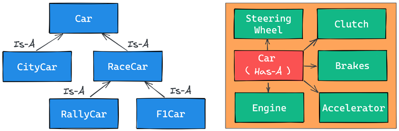
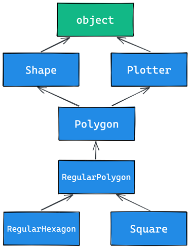

OPP, Decorator, and Iterators
Decorators
Sebelumnya kita membuat sebuah kode untuk mengukur waktu yang digunakan oleh interpreter dalam menjalankan kode python yang kita buat. Kita selelau menulis ulang kode tersebut ketika ingin mengukur waktunya. Jika penggunaan kode tersebut diguakan berulang kali kita dapat membungkus kode tersebu kedalam sebuah fungsi.
Code
Mekanisme penghitungan waktu yang dibutuhkan telah dibungkus kedalam sebuah fungsi. Namun bagaimana jika kita ingin membuat sebuah fungsi (bukan fungsi untuk measure-nya) agar menerima sebuah argumen.
Code
Info
Kode diatas menggunakan dictionary unpacking, iterable unpacking, variabel positional parameter, dan variable keyword parameter
Oke, namun bagaimana jika kita ingin pengukuran waktu tersebut berada didalam fungsi f() bukan dengan memanggil fungsi measure()?
Code
from time import sleep, time
def f(time=1):
"""This is doc of function f"""
sleep(time)
def measure(func):
"""This is doc of function measure"""
def wraper(*args, **kwargs):
"""This is doc of function wrapper"""
t = time()
func(*args,**kwargs)
print(f'took : {time()-t}')
return wraper
f = measure(f) #(1)!
f(1)
f(time=1.5)
f.__doc__
- Decorator point
Mari kita jabarkan kode diatas. Yang terpenting dari kode diatas adalah decorator point. Kita me-reassign name f dengan apapun yang dikembalikan oleh fungsi measure() dengan argumen fungsi f() itu sendiri. Didalam fungsi !#python measeure() kita membuat sebuah fungsi dengan nama wrapper() dan mengembalikan fungsi tersebut. Sehingga terjadilah the net effec setelah decorator point, ketika kita memanggil fungsi f() sebenarnya kita memanggil fungsi wrapper(), dapat kita buktikan dengan memanggi attribut __doc__ interpreter mengeluarkan dokumentasi dari fungsi wrapper(). Karena didalam fungsi wrapper() memanggil fungsi func(), yaitu fungsi f() maka perulangan ditutup.
Fungsi wrapper() adalah sebuah pembungkus, fungsi tersebut menerima variabel positional dan keyword arguments serta menjalankan fungsi f() dan juga melakukan pengukuran waktu didalamnya.
Teknik tersebut disebut dengan decoration dan fungsi measure() adalah decorator-nya. Paradigma ini menjadi sangat terkenal dan akhirnya pada versi 2.4 python menambahkan special syntax untuk mendapatkan hasil yang sama dengan decoration itu.
Dibawah ini adalah beberapa syntax cara menggunakan decorator, satu decorator, dua decorator dan satu decorator yang dapat menerima sebuah argumen.
Oke, mari kita gunakan spesial syntax tersebut kepada kode sebelumnya.
Code
Oke, lebih simple menggunakan spesial synrax, Namun kita ingin membetulkan sedikit kode. kode diatas dan sebelumnya ketika kita memanggil attribute __name__ dan __doc__ fungsi yang didekor mengembalikan fungsi wrappernya. Kita dapat betulkan dengan mengimport from functools import wraps dan menggunakan spesial syntax @wraps pada wrapper.
Code
from functools import wraps
def measure(func):
"""This is doc of function measure"""
@wraps(func)
def wraper(*args, **kwargs):
"""This is doc of function wrapper"""
t = time()
func(*args,**kwargs)
print(f'took : {time()-t}')
return wraper
@measure
def f(time=1):
"""This is doc of function f"""
sleep(time)
f(1)
print(f'function name : {f.__name__},', f'docs : {f.__doc__}')
Alhamdulillah, sekaramg kita tidak kehilangan attribute dari fungsi f().
Oke, sekarang mari kita buat contoh lain, katakan kita ingin membuat sebuah fungsi yang mengembalikan luas sebuah kotak dari nilai sisi yang diberikan pada sebuah parameter. Dan kita juga ingin tetap ada pengukura waktu yang dibutuhkan dan ada sebuah fungsi juga yang mengelarkan error jika hasil yang dikeluarkan dari fungsi utama lebih dari 100.
Code
from time import sleep, time
from functools import wraps
def measure(func):
@wraps(func)
def wrapper(*args, **kwargs):
t = time()
result = func(*args,**kwargs)
print(f'took : {time()-t}')
return result
return wrapper
def max_result(func):
@wraps(func)
def wrapper(*args,**kwargs):
result = func(*args,**kwargs)
if result > 100:
print(f"Hasil melebihi nilai seharusnya {result}")
return result
return wrapper
@max_result #(2)!
@measure #(1)!
def cube(value=0):
return value*value
print(cube(11))
print(f'function name attribute : {cube.__name__}')
- Decorator function
measurelebih dulu dijalankan - Decorator function
max_resultdijalankan setelahmeasure
Code
from time import sleep, time
from functools import wraps
def measure(func):
print(1)
@wraps(func)
def wrapper(*args, **kwargs):
print(4)
t = time()
result = func(*args,**kwargs)
print("6.","Hasil dari step 5 akan kesini")
print(f'\ttook : {time()-t}')
return result
print("1.2")
return wrapper
def max_result(func):
print("2")
@wraps(func)
def wrapper(*args,**kwargs):
print("3")
result = func(*args,**kwargs)
print("7.", "Hasil dari step 6 akan kesini")
if result > 100:
print(f"\tHasil melebihi nilai seharusnya {result}")
return result
print("2.2")
return wrapper
@max_result
@measure
def cube(value=0):
print(5)
return value*value
print("="*20)
print(cube(4))
print(f'function name attribute : {cube.__name__}')
Bingung, lihat detail dengan comen pada snipet diatas.
A decorator factory
Katakan kita ingin membuat sebuah decorator function yang dapat menerima sebuah argumen. Cara tersebut disebut dengan decorator factory. Agar decorator function dapat menerima sebuah function, kita harus membungkus fungsi decorator dengan fungsi lain yang menerima argumen untuk decorator fungsi tersebut. Lihatlah baris yang di hightlight dibawah ini.
Code
def measure(func):
@wraps(func)
def wrapper(*args, **kwargs):
t = time()
result = func(*args,**kwargs)
print(f'took : {time()-t}')
return result
return wrapper
def maxresult(treshold):
def decorator(func):
@wraps(func)
def wrapper(*args,**kwargs):
result = func(*args,**kwargs)
sleep(1)
if(result > treshold):
print(f"Hasil {result} melebih treshold {treshold}")
else:
print(f"Hasil {resukt}")
return result
return wrapper
return decorator
@measure
@maxresult(2)
def cube2(c=1):
return c ** c
cube2(4)
Object Oriented Programming
Tip
Dibawah ini adalah penggunaan istilah yang memliki maksud yang sama, namun terkadang penggunaanya sering tertukar dan tidak masalah selama maksudnya sama.
- Attribute = Propertiy
- Behavior = Method
- Instance = Object
- Parameter = Argument
Segelanya didalam python adalah objek. Dua pemain utama dalam OOP adalah object dan class. Class digunakan untuk membuat objek (objek adalah instance dari class). Ketika objek dibuat dari sebuah class, objek tersebut menurunkan atribut dan method dari class tersebut.
Code
(__main__ adalah nama scope dimana top-level code dieksekusi). Class sebenarnya adalah objek. Agar lebih jelasnya, class adalah instance dari Type. Penjelasan tentang konsep tersebut akan mengarah perbincangan tentang metaclasses dan metaprogramming.
Dapat kita lihat, syntax untuk membuat sebuahinstance sama dengan syntax untuk memanggil sebuah fungsi. Pada baris terakhir kodetersebut, kita menguji dan memverifikasi apakah objek inst_simple instance dari class Simple.
Tip
Ada cara lain yang lebih baik untuk menverifikasi instance dari sebuah objek yang akan ada dicatatan selanjutnya.
Class and object namespaces
Setelah class object dibuat (biasanya terjadi saat module pertama kali di import), objek tersebut merepresentasi namespace. Kita dapat memanggil class tersebut untuk membuat instance class tersebut. Setiap instance menurunkan attribute dan method clas tersebut dan memberikan namespace-nya sendiri. kita telahmengatahui untuk merujuk ke namespace, yang kita butuhkan adalah menggunakan operator dot .
Code
class Person:
species = 'Human'
print(Person.species) # Human
Person.alive = True # Added dynamically!
print(Person.alive) # True
man = Person()
print(man.species) # Human (inherited)
print(man.alive) # True (inherited)
Person.alive = False
print(man.alive) # False (inherited)
man.name = 'Darth'
man.surname = 'Vader'
print(man.name, man.surname)
# Darth Vader
Contoh diatas, kita membuat sebuah class atribute dengan nama species. Setiap variabel yang didefinisikan di badan dari class menjadi sebuah attribute classtersebut. pada kode diatas, kita juga membuat attribute Person.alive secara dinamik. Selanjutnya kita juga membuat sebuah instace dari class person dengan nama man. Instance tersebut menurunkan attribute dari class Person.
Instance man memliki isntace attribute, yang mana hanya bisa diakese oleh instance tersebut sendiri. Instance attribute tersebut adalah name dan surname. Attribute ini tidak bisa diakses dari instnce lainnya.
Code
Info
Class attribute dapat diakses oleh seluruh instance, sedangkan instance attribute tidak. Namun, anda harus menggunakan class attribute untuk menyediakan parameter dan method yang dapat diakases oleh semua instance dan gunakan instance attribute untuk membuat data spesifik untuk setiap individu objek.
Attribute Shadowing
Ketika kita mencari sebuah attribute pada sebauh objek. Jika atribute tersebut tidak ditemukan, python akan melanjutkannya ke attributepada class yang digunakan untuk membuat objek tersebut (dan terus berlanjut hingga ketemu atau akhir dari turunan). Prilak ini disebut dengan shadowing behavior.
Code
class Point:
x = 10
y = 7
p = Point()
print(p.x) # 10 (from class attribute)
print(p.y) # 7 (from class attribute)
p.x = 12 # p gets its own `x` attribute
print(p.x) # 12 (now found on the instance)
print(Point.x) # 10 (class attribute still the same)
del p.x # we delete instance attribute
print(p.x) # 10 (now search has to go again to find class attr)
p.z = 3 # let's make it a 3D point
print(p.z) # 3
print(Point.z)
# AttributeError: type object 'Point' has no attribute 'z'
The self argument
Dari dalam method class, kita dapat merujuk ke instance menggunakan special argument yang disebut dengan self. self selalu menjadi attribute pertama dari sebuah instance method.
self is always the first attribute of an instance method
Code
- Sepecial argument
selfharus menjadi attribute pertama dari instance method. Berguna untuk mengambil attribute atau behavior dari instance tersebut.
Lihat dibawah ini untuk contoh yang insyaAllah membuat kita lebih paham tentang behavior yang python lakukan terhadap special argument self ini.
Code
class Price:
def price_after_tax(self, tax):
return (self.pricing) * ((100+tax)/100)
p1 = Price()
p1.pricing = 20_000 # Set instance property
#------------------------------------------
# Memanggil method price_after_tax melalui
# instance dari Price
# -----------------------------------------
p1.price_after_tax(10)
#-------------------------------------------
# Memanggil method price_agter_tax lansung
# dari class.
#
# Menggunakan p1 sebagai special argument
# untuk mendapatkan instance property
# `pricing`
#-------------------------------------------
Price.price_after_tax(p1,10)
Kalau pusing, lihat contoh diatas aja hehe 
Initializing an instance
Sebelumnya, tepat pada code snippet diatas kita membuat sebuah behavior yang memerlukan attribute pricing. Dan attribut pricing tersebut kita buat setelah instace class Price terbuat. Ada cara yang lebih baik, yaitu menggunakan constructor.
Namun di python tidak disebut dengan constructor, melainkan initializer, karena initializer berjalan tepat setelah instance dibuat, dan langsung memanggil method special __init__. Method tersebut langsung berjalan setelah objek dibuat. Python object juga memliki method __new__ yang mana method tersebutlah constructor yang sebenarnya.
Info
Pada prakteknya, penggunakan method __new__ tidak sering digunakan (di ovveride); teknik tersebut banyak digunakan ketika membuat metaclasses.
Code
class Rectangel:
count_side = 4 # class property
def __init__(self,side1,side2):
self.side1 = side1 # instance property
self.side2 = side2 # instance property
def area(self):
return self.side1 * self.side2
r1 = Rectangel(2,3)
print(r1.area()) # 6
r2 = Rectangel(3,5)
print(r2.area()) # 15
print(r1.count_side == r2.count_side) # True
Ketika objek dibuat, __init__ method secara otomatis akan berjalan. Pada kasus diatas, kita membuat method tersebut menerima dua buah argument dan badan dari method tersebut kita gunakan untuk membuat sebuah instance property.
MasyAllah, dapat kita lihat juga, pemanggilan fungsi area() dari objek r1 dan r2 merefleksikan hasil dari instance argument yang berbeda.
Pada kode tearkhir diatas kita memverifikasi bahwa instance r1 dan r2 berbagi class property yang sama.
OOP is about code reuse
Inheritance and composition
Inhereitance terjadi ketiak dua objek saling berhubungan dengan tipe relasi Is-A
Composition terjadi ketia dua objek saling berhubung dengan tipe relasi Has-A
Bismila, mari kita lihat kode dibawah ini agar lebih mudah untuk memahami apa itu inheritance dan composition.
Code
class Engine:
def start(self):
pass
def stop(self):
pass
class ElectricEngine(Engine): # Is-a Engine
pass
class V8Engine(Engine): # Is-a Engine
pass
class Car:
engine_cls = Engine
def __init__(self):
self.engine = self.engine_cls() # Has-A Engine
def start(self):
print(
'Starting engine {0} for car {1}... Wroom, wroom!'.format(self.engine.__class__.__name__, self.__class__.__name__))
self.engine.start()
def stop(self):
self.engine.stop()
class RaceCar(Car): # Is-A Car
engine_cls = V8Engine
class CityCar(Car): # Is-A Car
engine_cls = ElectricEngine
class F1Car(RaceCar): # Is-A RaceCar and also Is-A Car
pass # engine_cls same as parent
car = Car()
racecar = RaceCar()
citycar = CityCar()
f1car = F1Car()
cars = [car, racecar, citycar, f1car]
for a in cars:
a.start()
Kode diatas menujunkan pada komen hubungan relasi Is-A dan Has-A antar objek. Pertama, mari kita lihat class Engine. Class sederhana yang memliki dua buah methods, start dan stop.
Selanjunya kita membuat class ElectriceEngine dan V8Engine yang mana keduanya turunan dari class Engine. Dapat kita lihat penentuan turunan tersebut dari class Engine setelah nama class ElectricEngine dan V8Engine. Dengan demikian, kedua class tersebut menurunkan attribute dan method dari class Engine, yg mana Engine class adalah base class dari ElectricEngine dan V8Engine.
Sama dengan class Car, class tersebut adalah base class untuk kedua class RaceCar dan CityCar. RaceCarjuga base class dari F1Car. Dengan kata lain, F1Car menurunkan semua attribute dan method dari RaceCar yang mana juga turunan dari Car. Artinya F1Car Is-A RaceCar Is-A Car, sehingga disimpulkan F1Car Is-A Car. Sedengkan CityCar Is-A Car.
Ketika kita mendefinisikan class A(B): artinya, A adalah child dari B, dan B adalah parent dari A. Parent class sinonim dengan Base class. Dan terkadang juga dikatakan sebuah class turunan dari class lain, atau dikatakan dalam inggrinsya selain inherits juga disebut dengan extends.
Mekanisme diatas disebut dengan inheritance
Setiap class memliki class attribute, yaitu, engine_cls yangmana refresi ke engine class yang nantinya kita ingin assign untuk setiap tipe mobil. Car memliki class Engine uumum, dimana RaceCar memliki V8Engine dan CityCar memliki ElectriEngine.s
Ketika objek car dibuat, intializer method, __init__() akan membuat instance dari engine class yang di assign ke mobil yang bersangkutan, dan akan dipasang menjadi instace attribute.
...
class Car:
engine_cls = Engine
def __init__(self):
self.engine = self.engine_cls() # Has-A Engine
# Menjadi instance attribute engine
...
Tipe relasi antara Car dan Engine adalah Has-A. Aspek ini disebut dengan composition, dan merefleksikan bahwa objek-objek dapat terdiri dari banyak objek. Car has-A engine, gears, wheels, frame doors, seats, dan seterusnya.
Tip
When designing OOP code, it is important to describe objects in this way so that we can use inheritance and composition correctly, to structure our code in the best way.
Oke, sekarang mari kita verifikasi terkait objek instansi dari class yang mana
Code
car = Car()
racecar = RaceCar()
citycar = CityCar()
f1car = F1Car()
cars = [("[car]",car), ("[race car]",racecar), ("[city car]",citycar), ("[F1 car]",f1car)]
class_cars = [Car,RaceCar,F1Car,CityCar]
for car in cars:
for _class in class_cars:
is_instance = isinstance(car[1], _class)
msg = "instansi dari" if is_instance else "bukan instansi dari"
print(f"{car[0]} {msg} {_class.__name__}")
print("\n")
[car] instansi dari Car
[car] bukan instansi dari RaceCar
[car] bukan instansi dari F1Car
[car] bukan instansi dari CityCar
[race car] instansi dari Car
[race car] instansi dari RaceCar
[race car] bukan instansi dari F1Car
[race car] bukan instansi dari CityCar
[city car] instansi dari Car
[city car] bukan instansi dari RaceCar
[city car] bukan instansi dari F1Car
[city car] instansi dari CityCar
[F1 car] instansi dari Car
[F1 car] instansi dari RaceCar
[F1 car] instansi dari F1Car
[F1 car] bukan instansi dari CityCar
Sebagaimana yang kita lihat, car adalah instance dari Car, sedangkan race car adalah instance dari Car dan RaceCar.
Oke, mari sekarang kita check apakah sebuah class turunan dari base class atau parent class tertentu menggunakan fungsi issubclass().
Code
car = Car()
racecar = RaceCar()
citycar = CityCar()
f1car = F1Car()
class1 = [Car,RaceCar,F1Car,CityCar]
class2 = [Car,RaceCar,F1Car,CityCar]
for cls1 in class1:
for cls2 in class2:
is_instance = issubclass(cls1, cls2)
msg = "subclass dari" if is_instance else "bukan subclass dari"
print(f"[{cls1.__name__}] {msg} {cls2.__name__}")
print("\n")
[Car] subclass dari Car
[Car] bukan subclass dari RaceCar
[Car] bukan subclass dari F1Car
[Car] bukan subclass dari CityCar
[RaceCar] subclass dari Car
[RaceCar] subclass dari RaceCar
[RaceCar] bukan subclass dari F1Car
[RaceCar] bukan subclass dari CityCar
[F1Car] subclass dari Car
[F1Car] subclass dari RaceCar
[F1Car] subclass dari F1Car
[F1Car] bukan subclass dari CityCar
[CityCar] subclass dari Car
[CityCar] bukan subclass dari RaceCar
[CityCar] bukan subclass dari F1Car
[CityCar] subclass dari CityCar
Dapat kita lihat, ternyata sebuah class adalah subclass dari dirinya sendiri .
Dibawah ini adalah gambar yang insyaAllah mempermudah pemahaman tentang perbadaan dari hubungan Is-A dan Has-A.

Accessing a base class
When we don't specify a base class explicitly, Python will set the special object class as the base class for the one we're defining. Ultimately, all classes derive from object
Info
Therefore, writing class A: pass or class A(): pass or class A(object): pass is exactly the same thing.
The object class is a special class in that it hosts the methods that are common to all Python classes, and it doesn't allow you to set any attributes on it.
Let's see how we can access a base class from within a class
Code
class Book(object):
def __init__(self,title, publisher, pages):
self.title = title
self.publisher = publisher
self.pages = pages
class EBook(Book):
def __init__(self, title, publisher, pages, _format):
self.title = title
self.publisher = publisher
self.pages = pages
self.format = _format
b1 = EBook("Perjalanan menuju surga","Cahaya Sunnah", 220,"PDF")
Lihatlah kode diatas, tiga nilai masukan paramter class Book di duplikasi pada class Ebook. Cara ini tidak terlalu baik, karena, kita harus membuat dua instruksi yang sama persis pada dua class tersebut. Terlebih lagi, setiap perubahan yang ada pada Book.__init__() tidak akan merefleksi pada Ebook. Kita telah ketahui, Ebook Is-A Book, maka seharusnya perubahan yang terjadi pada base class merefleksikan pada child class-nya.
Code
class Book(object):
def __init__(self,title, publisher, pages):
self.title = title
self.publisher = publisher
self.pages = pages
class EBook(Book):
def __init__(self, title, publisher, pages, _format):
Book.__init__(Book, title, publisher,pages)
self.format = _format
b1 = EBook("Perjalanan menuju surga","Cahaya Sunnah", 220,"PDF")
Sekarang, kode menjadi lebih baik. Kita telah menghapus duplikasi penulisan. Pada kode ini, kita memberitahu python untuk memanggil __init__() dari class Book; Kita memberikan argument self dengan class Book itu sendiri. Jika kita memodifikasi logika didalam __init__(), kita tidak perlu lagi mengubah logika pada class Ebook.
Pendekatan tersebut lebih baik, namun kita masih menulis kode yang lebih baik. Alih-alih memanggil Book.__init__() kita bisa menggunakan method super().
Code
class Book:
def __init__(self,title, publisher, pages):
self.title = title
self.publisher = publisher
self.pages = pages
class EBook(Book):
def __init__(self, title, publisher, pages, _format):
super().__init__(title, publisher,pages)
self.format = _format
b1 = EBook("Perjalanan menuju surga","Cahaya Sunnah", 220,"PDF")
super() adalah sebuah funsi yang mengembalian sebuah proxy object yang mendelegasi pemanggilan method pada parent class atau sibling class. Pada kasus ini, super() akan melimpahkan pemanggilan __init__() dari class Book.
Multiple Inheritance
Lihatlah gambar dibawah ini;

Dari gambar diatas, Shape dan Plotter adalah base class dari semua class dibawahnya. Polygon adalah turunan dari kedua base class tersebut, RegulerPolygon turunan dari Polygon dan RegulerHexagon serta Square turunan dari RegulerPolygon. Sebagai catatan, class Shape dan Plotter secara implisit adalah turunan dari object. Dari gambar diatas, kita dapat ketahui pola turunan tersebut menjadi pola diamond, dimana ada lebih dari satu jaur untuk sampai ke base class. Oke mari kita transformasi gambar diatas menjadi kode.
Code
class Shape:
geometric_type = "generic"
def area(self): # Placeholder of interface
raise NotImplementedError
def get_geometric_type(self):
return self.geometric_type
class Plotter:
def plot(self, ratio, topleft):
print (f"Plotting at {topleft}, ration {ratio}")
class Polygon(Shape,Plotter): # Base class untuk polygon
geometric_type = "Polygon"
class RegulerPolygon(Polygon): # Is-A Polygon
geometric_type = "RegulerPolygon"
def __init__(self, side):
self.side = side
class RegularHexagon(RegulerPolygon): # Is-A RegulerPolygon and Is-A Polygon
geometric_type = "RegulerHexagon"
def area(self):
return 1.5* (3**.5*self.side**2)
class Square(RegulerPolygon): # Is-A RegulerPolygon and Is-A Polygon
geometric_type = "Square"
def area (self):
return self.side * self.side
s1 = Square(2)
print(s1.get_geometric_type())
print(s1.area())
s1.plot(0.95,(27,12))
print("---------------\n---------------")
r_hexagon = RegularHexagon(20)
print(r_hexagon.get_geometric_type())
print(r_hexagon.area())
r_hexagon.plot(0.89,(67,85))
Bismillah, lihatlah kode diatas, class Shape memiliki satu buah attribute geometric_type dan dua buah method, area() dan get_geometric_type. Sangat umum terjadi pada sebuah kode menggunakan bases classes (seperti Shape pada contoh kita) untuk mendefinisikan sebuah interface, kumpulan method yang haris di implementasi oleh class children.
Tip
There are different and better ways to do this, but we want to keep this example as simple as possible.
yang unik adalah Plot(). method tersebut membuat kita dapat menambahkan objek dengan kemampuan yang tidak dimiliki. Teknik ini sangat populer pada webgramework seperti Django yang mana memiliki special classes dengan nama mixins.
Method Resolution Order
By now, we know that when we ask for someobject.attribute and attribute is not found on that object, Python starts searching in the class that someobject was created from. If it's not there either, Python searches up the inheritance chain until either attribute is found or the object class is reached. This is quite simple to understand if the inheritance chain is only made of single-inheritance steps, which means that classes have only one parent, all the way up to object. However, when multiple inheritance is involved, there are cases when it's not straightforward to predict what will be the next class that will be searched for if an attribute is not found.
Python provides a way to always know the order in which classes are searched on attribute lookup: the method resolution order (MRO).
let's see the MRO for the Square class:
code
Tip
COntoh diatas saya menggunakan nama class langsung dan memanggil attribute __mro__, dibawah ini adalah cara lain untuk mendapatkan list method resolution order
Merujuk ke gambar Multiple Inheritance, poin yang membingungkan setelah class Polygon, dimana class tersebut turunan dari dua buah class Shape dan Plotter. Berdasarkan hasil MRO, kita mengetahui, class Square akan dicari terlebih dahulu dari pada class Plotter.
Info
Mengapa fungsi dir() pada sebuah class tidak menampilkan attribute __mro__. Here the answer
Mengapa urutan pencarian ini penting ? oke, mari kita lihat kode dibawa ini.
Code
Dari hasil diatas kita dapatkan class B adalah yang dicari terlebih dahulu karena class D menurunkan B terlebih dahulu dibandingkan C. Hal tersebut juga didorong dengan hasil dari method resolution order, Namun bagaimana jika property label pada class B kita hapus ? Jawabannya adalah python akan mencari ke class C terlebih dahulu sebelum ke class A sesuai dengan urutan dari MRO.
Class and static method
Sebelumnya kita telah membuat instance method, namun ada dua tipe method lainya, yaitu static method dan class method.
Static method
Sebagai pengingat,ketika kita membuat sebuah objek dari sebuah class, Python akan memberikan nama pada objek tersebut. Nama tersebut akan menjadi sebuah namespace, dan terkadang sangat baik untuk mengelompokan fungsi-fungsi dibawah namespace tersebut. Static Method adalah fitur yang berguna untuk pengelompokan fungsi-fungsi.
Tidak seperti instance method, mereka tidak menerima special argument seperti self, dan kita juga tidak peru membuat sebuah instace dari class jika ingin memanggil fungsi tersebut.
Code
class StringUtil:
@staticmethod
def is_palindrome(word,/,case_sensitive=True):
# Filter comprehension list
word = [a.lower() if not case_sensitive else a for a in word if not a.isalnum()]
for a in range(len(word) // 2):
if word[a] != word[-a -1]:
return False
return True
@staticmethod
def get_unique_word(word):
return set(word)
word = 'In Girum Imus Nocte Et Consumimur Igni'
print(StringUtil.is_palindrome(word, False))
print(StringUtil.get_unique_word(word))
Static meethod dibuat dengan hanya memberikan decorator @staticmethod tepat diatas nama fungsi. Kita dapat melihat bahwa fungsi tersebut tidak menerima special argumen, kecuali hanyak penambahan decorator saja.
Class method
Class method sedikit berbeda dengan static method. Mirip dengan instance method, mereka menerima special argumen, pada kasus class method ini, spesial argumenya adalah class object itu sendiri, bukan instance. Penggunaan class method ini sering digunakan untuk menyediakan factory capability pada sebuah class, maksdudnya, kita menyediakan beberapa alternatif untuk membuat instance dari sebuah class.
Code
class Point:
provider = "Base"
def __init__(self,x,y):
self.x = x
self.y = y
@classmethod
def from_tuple(cls, datas):
cls.provider = "tuple"
return cls(*datas)
@classmethod
def from_point(cls, point):
cls.provider = "point"
return cls(point.x, point.y)
@classmethod
def from_dict(cls, kwargs):
cls.provider = "kwargs"
return cls(**kwargs)
def show(self):
print(f"Dibuat melalui {self.provider}",self.x,self.y)
p1 = Point(1,2)
p1.show() # Dibuat melalui Base 1 2
p2 = Point.from_tuple((2,4))
p2.show() # Dibuat melalui tuple 2 4
p3 = Point.from_point(p1)
p3.show() # Dibuat melalui point 1 2
p4 = Point.from_dict({"y":9,"x":8})
p4.show() # Dibuat melalui kwargs 8 9
Didalam setiap class method, cls argument merujuk pada class Point. Sebagaimana instance method, yang mana menerima self argument, class method menerima cls argument.
Static method sangat berguna untuk memecah logika dari sebuah method class untuk meningkatkan layout.
... Not yet finished in this part ...
Private method and name mangling
Didalam bahasa programming lain seperti Java,C#, atau C++ memiliki sebuah fitur privacy pada attributenya (method ataupun property).
Didalam python tidak ada hal tersebut, everything is public . Namun dipython memliki fitur yang mirip dengan itu, yaitu convention dan untuk privacy memliki fitur yang disebut dengan mangling. Convention adalah, jika sebuah attribute tidak diawali dengan underscore _ maka dapat dikatakan attribute tersebut adalah public, artinya kita dapat mengakses atribute tersebut dan dapat mengubah nilainya. Namun ketika nama attribute diawali dengan underscore, maka attribute tersebut menjadi private, artinya attribtue tersebut hanya digunakan oleh internal class dan kita tidak dapat memodifikasi nilai attribute tersebut atau memanggilanya dari luar class tersebut. Name mangling ini paling sering digunakan untuk membuat sebuah helper method yang hanya bisa diakases dari dalam class untuk membantun method yang diset secara public.
Attribute disini adalah, property dan method dari sebuah class
Code
Pada kode snippet diatas, kita membuat class B yang mana turunan dari class A. Saat membuat instance class B, secara otomatis kita akan membuat sebuah property factor dengan nilai 24 kara initializer function dari class parent (A). Lalu kita memanggil class op1 yang menampilkan property factor. Hasilnya adalah 24 sesuai dengan argumen yang diberikan oleh initializer function. Selanjutnya kita memangil method op2 yang mana pada method tersebut kita membuat property baru dengan nama yang sama, yaitu factor dengan nilai 27. Yang kita inginkan, property factor dari class parent dan child memliki nilai yang terpisah, artinya ketika memanggil dua fungsi op1 dari class parent dan op2 pada class child mengeluarkan nilai factor yang berbeda. Namun, kode snippet diatas, nilai factor akan tertiban pada method op2, self.factor = factor.
Untuk mencapai yang kita inginkan, kita gunakan name mangling.
Code
# Using name mangling
class A:
def __init__ (self, factor):
self.__factor = factor
def op1(self):
print(f"This is my factor {self.__factor}")
class B(A):
def op2(self, factor):
self.__factor = factor
print(f"This is my factor ({self.__factor}) from {self.__class__.__name__}")
ob1 = B(24)
ob1.op1()
ob1.op2(27)
ob1.op1()
Alhamdulilah, dengan penggunaan dua kali underscore __ kita telah membuat property factor menjadi private.
Oia, berbicara tentang name mangling, nama tersebut artinya, ketika nama variabel dari attribute memliki dua underscore awalan seperti __myattr, maka nama variabel tersebut diartikan oleh python dengan nama yang memliki awalan classname diikut dengan nama variable tersebut, sehingga nama variable __myattr menjadi _ClassName__myattr.
Artinya, ketika kita membuat class turuna dari sebuah class lain, mekanisme mangling ini menjadi private attribute pada setiap class, parent dan child class yang menghindari name collision. Setiap class dan instance menyimpan refrensi ke special attribute __dict__. Mari kita coba inspeksi special attribute pada class pada kode snippet diatas untuk melihat efek dari name mangling.
Code
Mekanisme ini memastikan bahwa ketika kode menjalankan ob1.__factor = 42, __factor pada class A tidak berganti karena kita mengganti _B__factor, yang mana property __factor pada class A aman dan private.
Untuk meyakinkan, mari kita lihat special attribtue __dict__ pada instance pada kode snippet sebelumnya yang tidak menggunakan mekanisme mangling.
Kita bisa lihat, instance tersebut hanya memliki satu buah attribute dari dua class A dan class B.
Implementasi memkanisme mangling dalam membuat helper method
Dibawah ini adalah implementasi class method, static method dan mekanisme mangling dalam membuat sebuah static method dan helper method.
# is palindrome
class StringUtils:
@classmethod
def is_palindrome(cls,words,/ ,case_sensitive=False):
if case_sensitive:
words = words.lower()
words = cls.__get_only_alpa_numeric(words)
for a in range(len(words) // 2):
if words[a] != words[-a-1]:
return False
return True
@staticmethod
def __get_only_alpa_numeric(words): # method ini tidak bisa diakses dari luar class
return [a for a in words if a.isalnum()]
try:
words = "In Girum Imus Nocte Et Consumimur Igni"
print(StringUtils.is_palindrome(words, True)) # True
print(StringUtils.__get_only_alpa_numeric("Test 123")) # Raise an exception
except Exception as e:
print(e)
The property decorator
Sekarang kita akan bahas tentang property decorator. Katakan kita memliki attribute age pada class Person dan kita ingin memastikan adanya validasi terlebih dahulu sebelum merubah nilai pada attribute age. Untuk itu, kita harus membuat sebuah accessor method seperti get_age() dan set_age()dan memasukan logika untuk validasi pada method tersebut (biasanya disebtu dengan setter dan getter)
Namun, masalahnya, kita akan menulis kode yang banyak untuk mengakses attribute dan mengganti nilai attribut tersebut. Bahasa seperti Java menghadapi masalah ini, dimana kita harus membuat accessor method untuk memenuhi apa yang kita inginkan diatas. Baiknya, banyak dari Java Integrated Development Evnironment (IDEs) memliki fitur autocomplete untuk membuat access method.
Accessor method on java
class Accessor{
public static void main (String[] args){
Person orang = new Person(50);
System.out.println(orang.get_age());
orang.set_age(70);
System.out.println(orang.get_age());
orang.set_age(150);
}
static class Person {
int age;
public Person(int age){
this.age = age;
}
public void set_age(int age){
if (age >=90){
System.out.println("Age must be less then 90");
}
else {
this.age = age;
}
}
public int get_age(){
return this.age;
}
}
}
Python mmeliki cara yang lebih jenius denga fitur property decorator-nya. Ketika kita men-decorate sebuah method dengan property, kita dapat menggunakan nama dari method dan menggangpanya sebagai data attribute.
The cached_property decorator
Manfaat lain pada penggunaan properties adalah ketika kita ingin menjalankan sebuah kode dengan tujuan untuk menyetel objek yang nantinya akan digunakan, katakan kita ingin terhubung kesebuah database atau kedalam sebuah API.
Pada kedua kasus diatas, kita harus menyetel sebuah objek client menggunakan sebuah property, dengan property decotrator tesrsebut kita dapat menyembunyikan kode yang kompleks saat menyetel client. Dibawah ini adalah comtoh dari penjelasan diatas.
Code
class Client:
def __init__(self):
print("Setting up client . . .")
def kueri(self, **test):
print(f"Menjalankan kueri . . .")
print(test)
class Manager:
@property
def client(self):
return Client()
def perform_kueri(self,**test):
return self.client.kueri(**test)
client = Manager()
query = {"query_select":"SELECT * FROM USERS"}
client.perform_kueri(**query)
client.perform_kueri(query_update="UPDATE USER VALUES(\"NAME\",\"DATE\")")
Dari contoh diatas kita membuat sebuah dummy class dengan namaClient yang mana initializernya menampilkan kalimat Setting up the client . . . setiap membuat instance dari class tersebu dan juga memliki method kueri yang juga menampilkan kalimat.
Selanjutnya kita membuat class Manager yang memliki client property yang mana method property (client()) tersebut yang akan membuat sebuah instance baru dari class Client setiap property tersebut di panggil
Jika kita menjalankan kode. kita akan melihat bahwa setiap kita memanggil method perform_kueri pada instance Manager, kita akan melihat kalimat Setting up the client . . . ditampilkan. Namun dengan cara ini, setiap kita membuat sebuah client akan sangat memakan resource, maka sebab itu ada cara yang lebih baik yaitu meng- cache client tersebut, caranya seperti dibawah ini.
Code
class Client:
def __init__(self):
print("Setting up client . . .")
def kueri(self, **test):
print(f"Menjalankan kueri . . .")
print(test)
class ManualCacheManager:
@property
def client(self):
if not hasattr(self,'_client'):
self._client = Client()
return self._client
def perform_kueri(self,**test):
# print("perform")
return self.client.kueri(**test)
client = ManualCacheManager()
query = {"query_select":"SELECT * FROM USERS"}
client.perform_kueri(**query)
client.perform_kueri(query_update="UPDATE USER VALUES(\"NAME\",\"DATE\")")
ManualCacheManager jauh lebih baik dibandingkan sebelumnya. Porperty client pada pertama kali di check apakah attribute _client sudah ada pada class atau tidak dengan menggunakan built-in function hasattr. Jika tidak maka buat attribute _client dan isi dengan instance baru dari class Client. Selanjutnya return attribute tersebut. Dengan demikian ketika kita memanggil fungsi perform_kueri kita tidak selalu membuat instance buar dari class Client.
Baiknya, pada python 3.8, modul functool menambahkan decorator cache_property. Menggunakan decorator tersebut kita tidak perlu lagi membuat chace secara manual. Dibawah ini adalah cara memanfaatkan dekorator tersebut.
Code
from functools import cached_property
class Client:
def __init__(self):
print("Setting up client . . .")
def kueri(self, **test):
print(f"Menjalankan kueri . . .")
print(test)
class Manager:
@cached_property
def client(self):
return Client()
def perform_kueri(self,**test):
return self.client.kueri(**test)
client = Manager()
query = {"query_select":"SELECT * FROM USERS"}
client.perform_kueri(**query)
client.perform_kueri(query_update="UPDATE USER VALUES(\"NAME\",\"DATE\")")
Info
Pada python3.9 ada fitur baru dengan nama cache decorator, yang dapat digunakan hampir sama dengan property decorator dan meliputi sekenarion yang tidak cocok jika menggunakan cache_property.
Operator Overloading
Sekarang kita bahas tentang python overloading. Untuk overload an operator (meniban operator) artinya adalah memberikan operator tersebut berdasarkan kontek yang digunakan. Contohnya, operator tambah + akan menjadi penambah jika konteksnya adalah angka namun akan menjadi penghubung katajika berurusan dengan squance.
Pada python, ketika kita menggunakan operator, maka kita sama saja memanggil special method dari objek tersebut dibelakangnya. Sebagai contoh, a[k] pada sebuah dictionary a ditranslate oleh python menjadi type(a).__getitem__(a,k). Dan hebatnya, kita dapat meniban special method tersebut untuk tujuan tertentu.
Code
Sebagai contoh overloading method, mari kita buat sebuah class yang menyimpang string dan mengevaluasi, True jika didalam string tersebut terdapat angka dalam tipe huruf 42 dan False jika sebaliknya. Juga kita buat sebuah property yang meyimpang panjang dari kalimat tersebut.
Code
Untuk implementasi lebih lanjut untuk overload special method anda dapat melihat ke official documentation Python data model.
Polymorphhism
Kata Polymorphism berasal dari yunani yan artinya oulys (banyak) dan morphē (bentuk), yang artinya adalah menyediakan banyak implemetasi dengan hanya satu interface.
Contoh yang telah kita lakukan menggunakan polymorphism adalah saat kita membuat sebuah class Car dimana kita memanggil method engine.start() pada sesi OOP code reuse, Tanpa memperhatikan tipe engine tersebut, selama instance tersebut memliki method start() kita dapat memanggilnya. Itu adalah manfaat dari polymorphism.
Pada bahasa lain seperti Java, untuk memberia sebuah fungsi meneriman tipe yang berbeda dan memanggil sebuah method pada setiap tipe objek, class tersebut haris dijadikan apa yang disebut dengan interface dan class lain yang ingin menerima method yang sama harus meng-implement interface tersbut.
How java handle polymorphism
interface Engine{
public void start();
}
class ElectricEngine implements Engine{
public void start(){
System.out.println("Electric engine started");
}
}
class V8Engine implements Engine{
public void start(){
System.out.println("V8Engine started, vrooooom");
}
}
class CityCar extends ElectricEngine {}
class DragCar extends V8Engine {}
class Poly{
public static void main(String args[]){
CityCar tesla = new CityCar();
tesla.start(); // Electric engine started
DragCar mustang = new DragCar();
mustang.start(); // V8Engine started, vrooooom
}
}
Di python berbeda, Polymorphism implicit, dan tidak ada yang menghalangi kita memanggil sebuah method dari sebuah objek tanpah harus meng implementasi interface atau pattern lainnya.
Ada juta polymorphism yang disebut dengan ad hoc polymorphism yang mana telah kita lihat pada sesi operator overloading. Fitur ini membuat kita dapat merubah implementasi dari sebuah method berdasarkan tipe data yang diberikan.
Data classes
Pada python 3.7, PEP 557, dapat dideskripsikan sebagai Mitable named tuples with defaults.
Code
Perhatikan, propety name harus bertipe string dan disisi lain mass dan speed harus bertipe float dan keduanya diberikan nilai bawaan. Hal lain yang menarik bawa kita tidak menulis method __init__, karena initializer telah dihandel oleh dataclass decorator bersamaan dengan method untuk komparasi dan untuk menhasilkan representasi dari objek (lihat pada baris akhir saat print(body))
Info
Untuk mendalami lebih lanjute tentang data clasess anda dapat meruju ke PEP 557